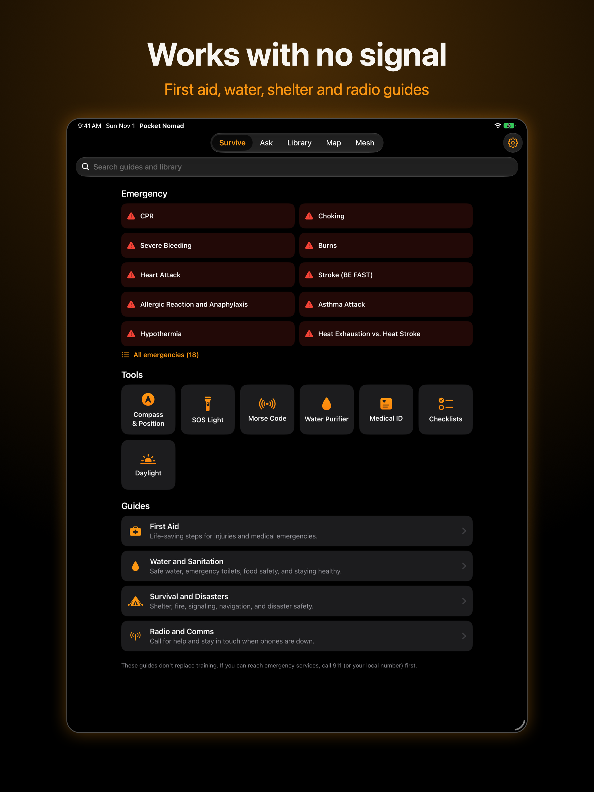
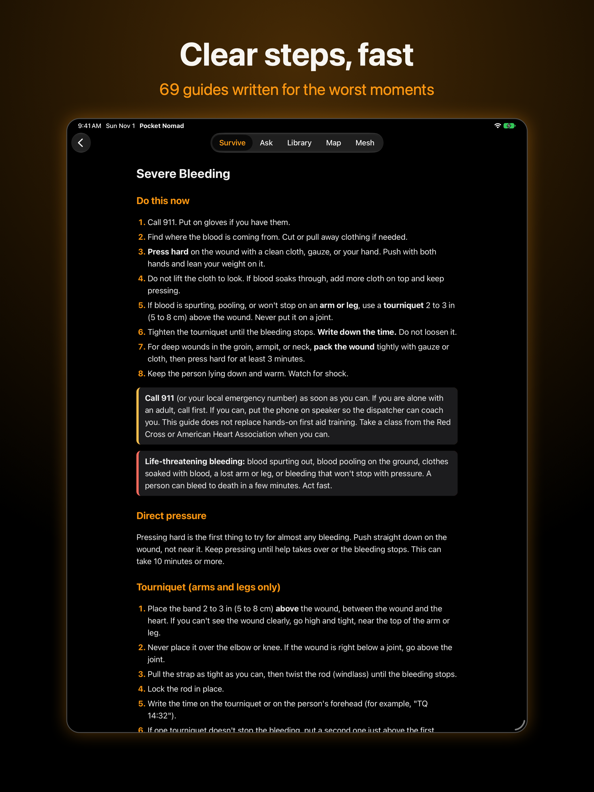
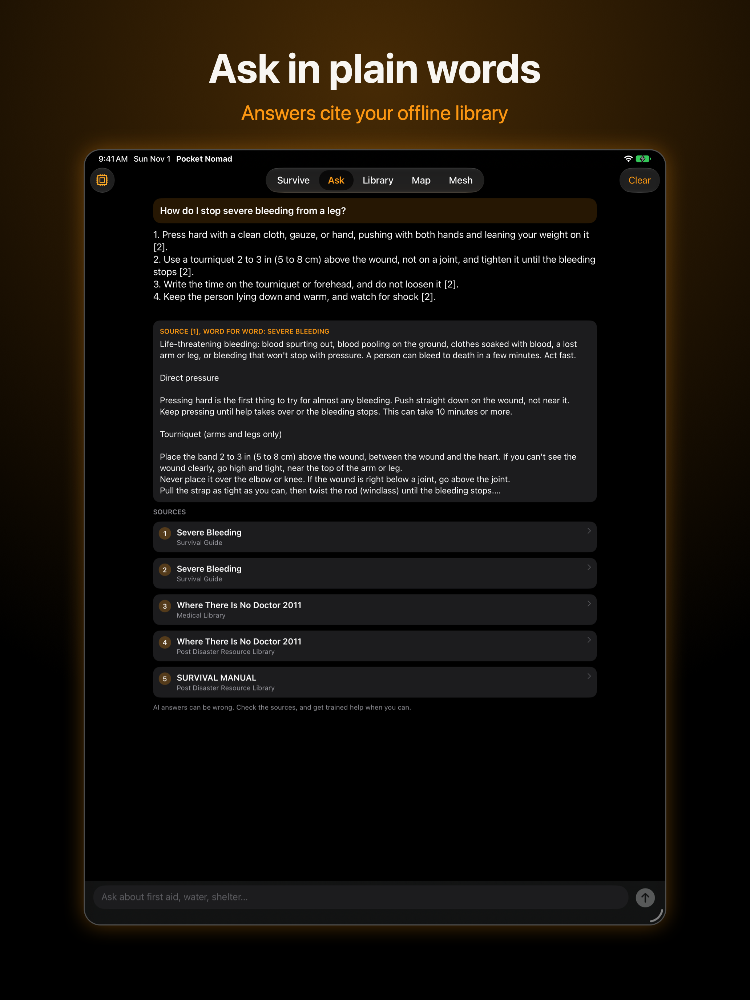
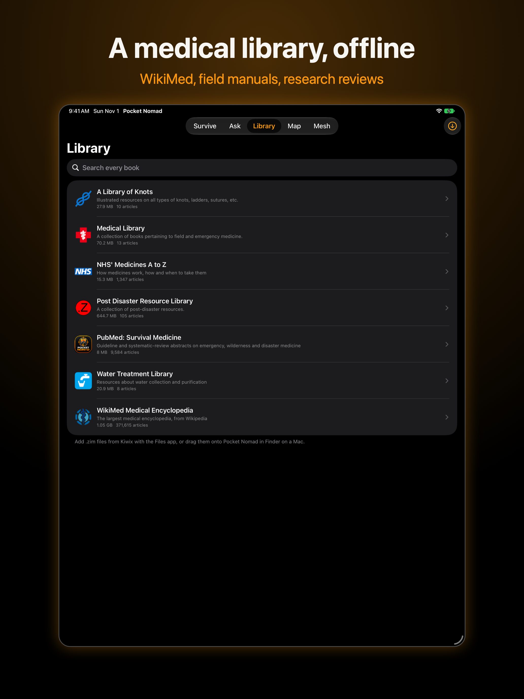
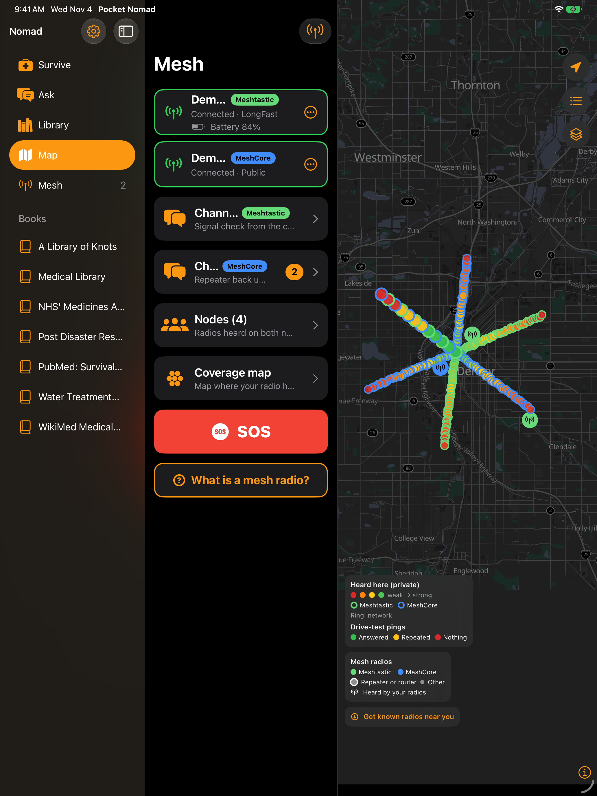
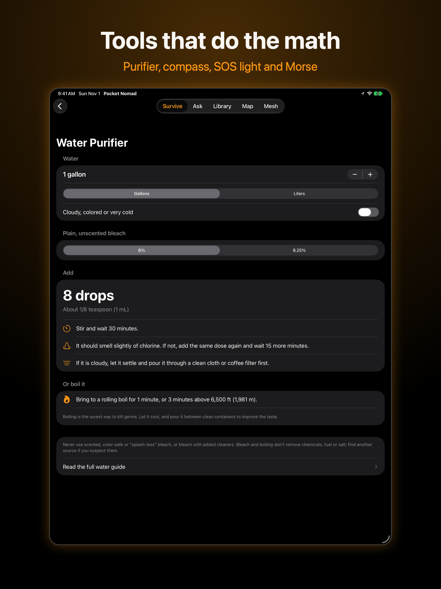

When you'd reach for it
Everything below works with the phone in airplane mode.
The grid is down
Cell towers fail within hours. Look up first aid, make water safe, and message neighbours over a mesh radio.
Out of range
Hiking, hunting or paddling with no bars: a GPS compass, offline maps, sunset times and treatment steps for bites, heat and cold.
Go-bag phone
Checklists for the bag, the car and the house, a Medical ID responders can read, and a library of field manuals.
No data plan
Street maps of the region you load before you leave, and reference books that don't need the internet.
Stay in touch
Pair a Meshtastic or MeshCore radio, or one of each, and text your group, see who's in range, and send an SOS with your position.
Map the mesh
Turn on drive mode, lock the phone in a car mount and drive: it records where your radios hear others and where your messages actually get through, on Meshtastic and MeshCore in one trip. Optionally share a privacy-filtered file to the public coverage map.
What's inside
Five tabs, all offline.
69 guides, 8 checklists, 7 tools
First aid (CPR, bleeding, burns, choking…), water and sanitation, shelter and fire, radio and comms. Compass with decimal, DMS and MGRS position; SOS and Morse light; bleach and boiling calculator; Medical ID; sunrise and sunset.
Answers that cite their source
Ask in plain words. The app finds the best passages in your guides and books, and an on-device model answers only from them, quoting the source. Doses it can calculate, it calculates itself.
Whole books, offline
Reads Kiwix libraries: WikiMed, the Post-Disaster Library, military field medicine, water treatment manuals, NHS medicines and more, with full-text search.
OpenStreetMap, offline
A world overview is built in; add a region or a whole state for street-level detail. Drop pins for water, shelter and rally points, and see mesh radios live, with Meshtastic and MeshCore in their own colours.
Meshtastic and MeshCore
Text over a LoRa radio paired by Bluetooth. The app detects which firmware your radio runs: channel chat, direct messages with delivery receipts, the node list, one-tap SOS, and blocking for any radio you'd rather not hear from.
Know where the mesh reaches
An optional scanner logs where your radio heard others, coloured by signal, using your phone's own GPS (no GPS module needed on the radio). Private by default. See the public coverage map.
Map it from the car
Keeps recording with the phone locked in a mount or while you navigate in another app, and picks up again if the phone closes the app. Every MeshCore packet your radio hears becomes a map point. A ping test every 300 m marks each spot green (answered), yellow (repeated by another radio) or red (nothing heard); on MeshCore it traces the nearest repeater, no setup needed. Runs until you turn it off. If a radio drops out, the phone keeps looking for it and reconnects on its own, and it warns you if no radio has been connected for 5 minutes.
Every repeater near you
One tap downloads the public Meshtastic list from meshmap.net and the MeshCore list from map.meshcore.io, keeps the radios near you, and shows them offline: repeaters ringed, tap any one for details. Radios marked ⛔, 🛑 or 🚫 are left out.
Tune in to your local mesh
Change a radio's frequency, preset and transmit power right from the app. "Match radios near you" picks the settings most radios in your area use, so a new radio hears its neighbours instead of sitting on the factory default.
Both networks at once
Connect a Meshtastic and a MeshCore radio together. Both feed the coverage scanner and drive mode, and the map shows each network in its own colour, or just one of them. Each keeps its own chats, and an SOS goes out on both.
Your drives survive a reinstall
Coverage recordings back up automatically to a folder you choose on the phone itself, never the cloud, and restore by merging. The map credits only the repeater your radio actually heard, keeps relayed radios on their own layer, and never plots your own radios. Mark a second phone or your home repeater as yours and it stays off the map too. Where you drove is only drawn if you turn it on.
On your wrist
SOS light with haptics, compass with your position, the urgent first-aid steps, and quick mesh replies through your phone.
On any Wear OS watch
A standalone watch app: SOS light with vibration, compass with your position in decimal and MGRS, and the urgent first-aid steps. It works with the phone left behind. How to install
Checked against the sources
Every first-aid, water and radio guide was checked against the current AHA and Red Cross first-aid guidelines, CDC, EPA, WHO, the Wilderness Medical Society, NOLS and FCC rules. See what was checked and changed.
Private by design
The App Store label is "Data Not Collected".
- No accounts, analytics, ads or tracking. There are no servers; the developers never receive your data.
- Everything stays on the phone: your Medical ID, messages, pins, checklists and coverage recordings.
- The AI runs on the device. Questions and answers aren't saved.
- Coverage sharing is opt-in and needs a private zone first. Before a file exists, the phone removes your private places, exact positions, node names and IDs, and dates finer than a month.
- The only network use is downloads you start: books from the Kiwix library, AI models from Hugging Face, and the known-radio lists from meshmap.net and map.meshcore.io. None of them is sent your location.
- Mapping respects opt-outs. Radios with ⛔, 🛑 or 🚫 in their name are never recorded, shared or shown.
Get Pocket Nomad
Free, with no in-app purchases.
Official beta on TestFlight
The full app: offline library, on-device AI, mesh with two radios at once, drive mode and the Watch app. Join the beta now through Apple's free TestFlight app; the App Store is next. Requires iOS 17 or later. How to join
Beta APK now
The full app: guides and tools, offline library, on-device AI, maps, mesh with two radios at once, coverage and drive mode, plus a Wear OS watch app. Install the beta today; Google Play is next. How to install
Web app
Guides, checklists, tools and the map on any phone or computer, offline once installed. Mesh texting in Chrome and Edge. How to install
Compare what each version can do
The guides follow published guidance (Red Cross, CDC, EPA, FEMA, WHO and others) and list their sources, but they don't replace training. Call emergency services whenever you can.